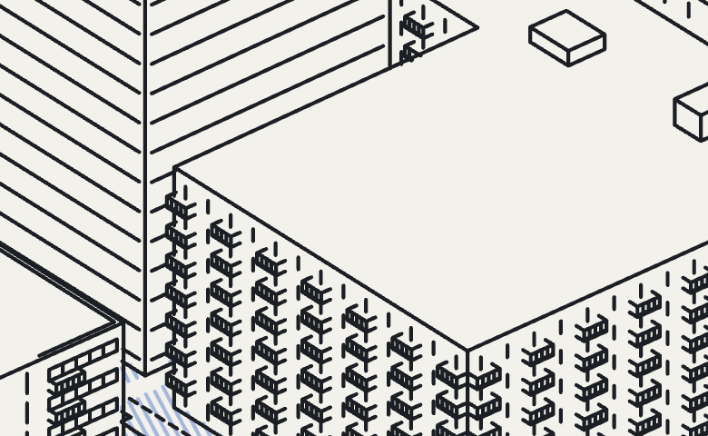
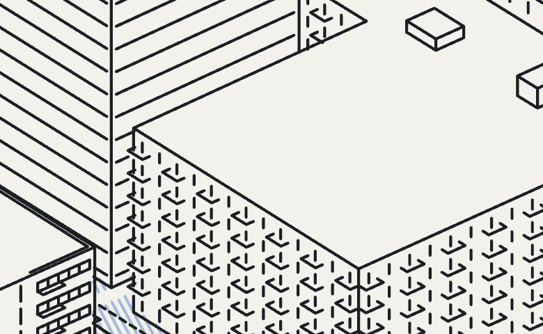
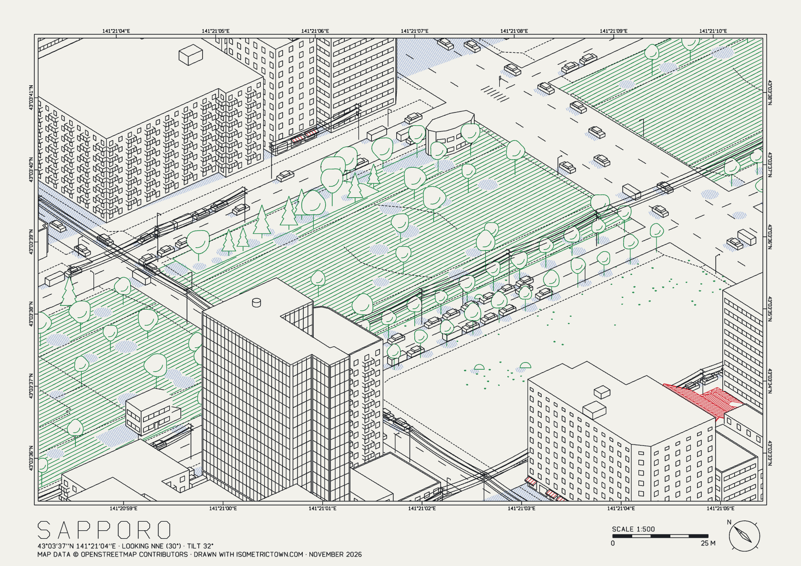

15 November 2026 · Original review · Round 6
Balcony railings now simplify according to their perpendicular projected height. Where the railing is too small to read, one continuous top rail with side returns replaces the cage of lines. At closer scales, a front outline and clearly spaced uprights describe the railing.
The redundant pair of bottom edges has become one edge. Uprights attach to it and keep at least 1.2 mm of horizontal separation, adjusted by Detail and pen width. The same surfaces remain in the depth buffer, so windows behind the balcony remain hidden. Balcony positions, sizes and building classification are unchanged.



Three places at two scales, Detail 1 and a 0.35 mm pen, optional OSM tags off. Times are estimates. Sapporo at 1:1000 loses roughly 22% of its strokes and 17% of its estimated plotting time; the other comparisons change little or not at all because few affected balconies appear at those settings.
| Sheet | Waste before → after | Estimated time change |
|---|---|---|
| Sapporo 1:1000 | 7.1% → 5.8% | -17.5% |
| Sapporo 1:2000 | 13.6% → 13.6% | +0.0% |
| Midtown Manhattan 1:1000 | 3.4% → 3.4% | -0.2% |
| Midtown Manhattan 1:2000 | 6.2% → 6.2% | +0.0% |
| Mollis 1:1000 | 6.8% → 6.8% | +0.0% |
| Mollis 1:2000 | 10.2% → 10.2% | +0.0% |
Before lab report · After lab report · Close-scale check (local generated files)
Reviewed the changed Mollis-default golden, six LOD comparison sheets, balcony close-ups, and Sapporo at 1:500. Only one of the 12 goldens changes, exclusively in window linework and its plot/SVG summaries. Counts, classification and all other feature strokes remain unchanged. The existing goldens have limited balcony coverage; Sapporo’s lab drawings provide the stronger visual evidence.
Regression tests verify that simplified balconies preserve their depth faces and use a single top outline, and that detailed uprights stay separated with regular and broad pens. The full suite also checks panning, determinism, settings gates and valid linework. No physical proofs were inspected, nor all 29 presets or every camera and pen combination. Small shutters, path crossings and wider composition remain for later work.